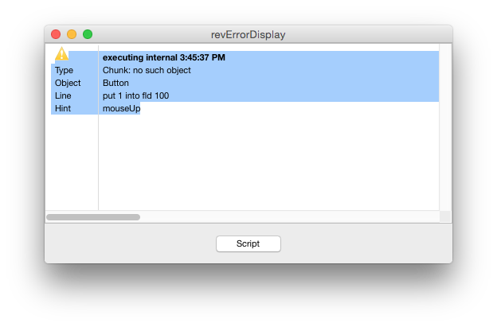
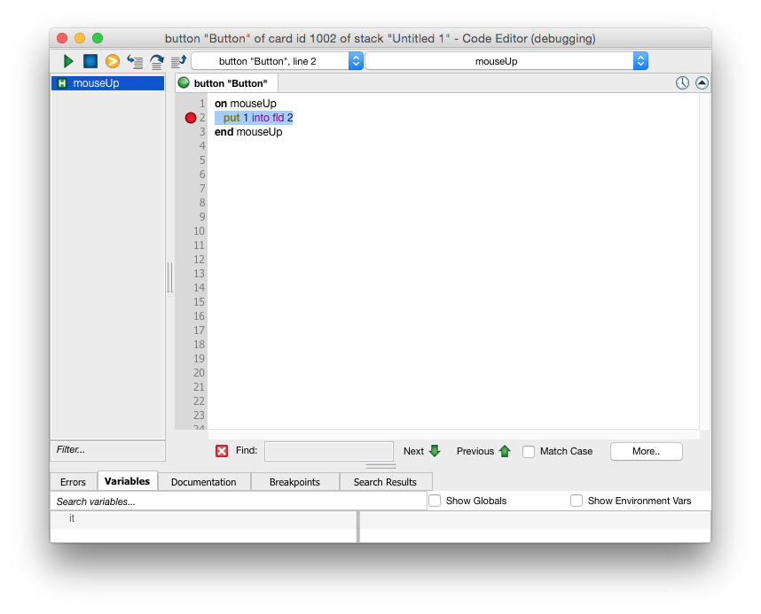
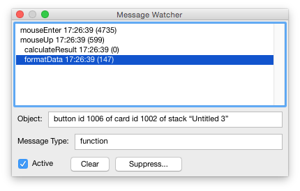
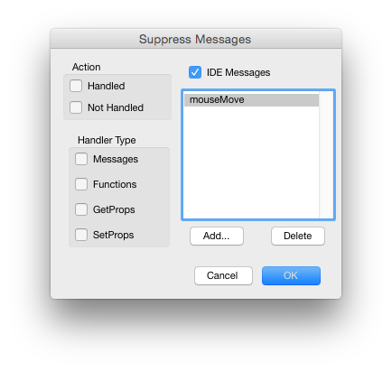

In an ideal world everyone would write perfect code and there would never be any need to debug. However in reality, virtually every project is going to require some degree of debugging. The more complex the project the more like this is to be true. Fortunately LiveCode includes a full plethora of debugging tools and techniques that make it quick and easy to track down errors. The live run-edit cycle allows you to see the effect of corrections as soon as you make them. And, unlike working in a lower-level language, when you make a mistake you will receive a human-friendly error message pointing you to where the error occurred, instead of the application unexpectedly quitting.
As well as the set of built-in error reporting and debugging tools, LiveCode also allows you complete flexibility over error handling, allowing you to provide a customized experience to the end user of your application.
If you encounter a problem with your code, there are a number of methods available to help you track it down. In this section we detail some of the main techniques you may find useful.
Often the first thing that will alert you to a problem is an error dialog.

Figure 80 – The Error Dialog
The Execution Error dialog is displayed when your script is running and encounters an error, if Script Debug Mode is turned off (under the Development menu).
In the example above, the script was attempting to access field 100. This field does not exist. When LiveCode encounters a problem like this, execution will halt and the dialog above will be displayed.
If you know what the error is from looking at it, use the Script button to go directly to the script and edit it. The line that generated the error will be highlighted in the script window.
If Script Debug Mode is on, the script editor will automatically open up on execution error and display the line which caused the error.
A Script Error occurs when your script cannot be compiled because of a syntax error. This is flagged up in the script editor when you attempt to compile a change to a script by pressing the Apply button in the Code Editor. Correct the error then press the Apply button to compile the script again.
Caution: If a compile error is generated then the entire script to which it applies will not be compiled, not just the line or handler that contains the error. If other scripts are attempting to call commands or functions in this script they will not be able to run until you correct the problem and compile the script again.
Because LiveCode compiles all the scripts within a stack when it loads them, a Script Error dialog can be generated when you load a stack from disk for the first time – if you saved a stack that contained a script that could not compile.
Important: Do not confuse the Execution Error and Script Error dialogs. The Execution Error dialog occurs when a script is running and cannot continue due to an error. The error dialog will start with the words "executing at [time]". The Script Error dialog appears when you attempt to compile a script that contains a syntax error. The error dialog will start with the words "executing at [time]".
Tip: If you turn on the Variable Checking option in the Code Editor, LiveCode will require that you declare all variables and enclose all literal strings in quotes. It will report a script compile error if you attempt to use an unquoted literal or do not declare a variable. This can be useful in catching mistakes before you run a script. Note that if you turn this option on and attempt to compile an existing script that has not been written in this way, it will typically generate a large number of errors that need to be corrected before you can compile it.
If your stack gets into an unstable state where it is generating a large number of errors, you may want to temporarily turn off sending messages to the stack or displaying error messages. This can enable you to edit the stack to make the appropriate changes.
To suppress messages, press the Messages button on the toolbar or choose Suppress Messages from the Development menu. Normal system event messages will stop being sent to the stack (for example clicking a button will no longer trigger a mouseUp handler, changing card will no longer trigger an openCard handler). You can still send custom messages directly to objects within the stack.
To suppress errors, press the Errors button on the toolbar or choose Suppress Errors from the Development menu. This will prevent any errors from triggering an error display window.
Caution: Be sure to turn messages and errors back on when you have finished editing. Otherwise your stack will not work, or any error that comes up during stack operation will cause execution to halt but will not display an error message.
You can execute a single navigation command in the message box with a similar effect as
Suppress Messages by including the statement lock messages; before it. For example, to
go to the next card lock messages; go next or to exit LiveCode (without displaying
triggering any close messages or asking to save changes) lock messages; quit.
If you want to know about the state of a particular variable or condition during execution, you can use the Variable Watcher, detailed below. However sometimes you may want to run a script without opening the debugger, outputting information along the way. You can use the put command to output information to the Message Box, a field or a text file, the write command to output to the Console, or the answer command to display a dialog.
Output to the Message Box
The Message Box is a convenient way to output information while a script is running. It allows you to display the information you want within the IDE without having to create a field or stack to display the information. Using a put command without specifying a destination outputs to the Message Box:
put tVar
In the example above, substitute tVar with the name of the variable in your script that you want to see the contents of. You can also output information only if a certain condition is met:
if tVar is true then put tData
Whenever you display something in the message box, a special global variable called message (often abbreviated to msg) is updated. This allows you to check the contents of the message box easily, as well as add or append information rather than replacing it.
-- puts tInformation and a return after the data
-- already in the message box
put tInformation & return after msg
For more information, see the section on the Message Box, above.
Output to Standard Out (stdout or the Console on Mac)
Standard Output (stdout) is a useful place to log messages. Unlike the Message Box, it is easy to log a sequence of events which you can then scroll back to review later on. It also has the advantage of being external to LiveCode so using it does not interfere with your application window layering or focus in any way. On Mac, it can be accessed by opening the Console application, located in the Utilities folder within Applications.
The syntax to write something to stdout or the Console is:
write tMessage & return to stdout
Tip: If you are writing a lot of data out to the console, it can be useful to append the time to each one to make it easier to debug.
write tMessage && the long time & return to stdOut. If you need more granularity than seconds, use the milliseconds instead of the long time.
If you are inserting debugging output statements into your code, consider making them conditional on a global variable. This allows you to turn on debugging by setting the variable without making changes to code. Even better it prevents forgotten debugging code in your application inadvertently filling the console with messages on an end user's system.
if gDebugging then write tMessage & return to stdOut
Output to a field
You can create a stack that contains fields used for debugging:
put tVar & return after field "debugging info" of stack "my debug stack"
Tip: You may want to create a set of tools that makes it easy to debug a specific application you are working on. Create this stack then save it into your plug-ins folder so it is available from the Development menu in the IDE.
Output to a dialog
To display a dialog with the contents of a statement, use the answer command. This method is suitable if you want to output something quickly, but is usually unsuitable for larger debugging tasks as it pauses execution to display a dialog each time.
if tVar is true then answer tVar
Output to a text file
If you want to log information more permanently, you can use a text file. You may want to store the file path in a global variable so you can change it easily. See the Transferring Information guide for more information.
put tVar & return after URL "file:debug.txt"
If you need to interrupt a script while it is running, press control-period (or command-period on Mac OS). Note that interrupting a script will only work if the global allowInterrupts property is set to true.
Tip: On Mac OS X systems, if your application has got into an unstable state and you are unable to interrupt it with command-period you may be able to interrupt it and regain control by sending it a signal. Open the Terminal utility and then use top -o cpu or ps ax to retrieve the process ID for LiveCode. Then run kill -sighup [processID] where [processID] is the ID of the LiveCode process.
Typically when you want to track down a problem with your script, you will want to use the debugger. The debugger provides a simple interface that allows you to step through your script line by line as it executes. You can see the results of each statement as it happens. If you load the Variable Watcher from within the debugger, it will show you the contents of all of the variables used in a particular handler. These values will be updated as you step through. You can even edit these values while your script is running. This can be useful if you spot a problem in a given area or want to test a section of code with a different set of data as it runs.
To activate the debugger, first ensure that Script Debug Mode is turned on in the
Development menu. Then open up the script you want to debug and click in the gray bar to
the left of the line where you want to open the debugger. Alternatively you can write the
command breakPoint into the script. Using the breakPoint command allows you to
break conditionally – if tVar is true then breakPoint.
Next run your script as normal. When LiveCode reaches a breakpoint it will pause execution and load up the debugger.
Important: To see the contents of variables while your script is running, wait for the debugger to open then open the Variables pane (or select Variables from the Debug menu).

Figure 81 – The Debugger
For a table describing each of the buttons in the debugger together with their keyboard shortcuts, see the section on The Debug Menu in the LiveCode IDE guide.
Press the Step Into button to execute the current line and move to the next line. Step Over performs the same action, except that if the current line calls a function it will run that entire function without opening it in the debugger.
Once you have found the cause of the problem, press the Run button to exit the debugger and run the script at full speed. Alternatively press the Abort button to halt execution on the current line and edit the script.
Tip: To improve the performance when debugging a complex script, set a breakpoint further down in the script during the debugging process and press the Run button instead of pressing Step Over. The debugger is temporarily deactivated until the new breakpoint is reached, which means the script runs at full speed. When using Step Over, the debugger is still active even though it does not display a routine as it runs, which is slower.
If you are creating an application that is going to be distributed, you may want to include a method for catching and handling errors. LiveCode provides two such methods. The first is the try/**catch** control structure. This control structure can be inserted around any routine that you know may encounter problems when in use. For example, you may wish to include this around a routine that reads in a file from disk to handle the case where a corrupted file has been selected. The second method is to write a custom errorDialog routine. Unlike a try/**catch** control structure, an errorDialog handler is global to your application (or card or stack within an application) and does not provide a mechanism to allow a script that encounters an error to continue. Use this method to display a custom error dialog when an error occurs that you are unable to predict and report using try/catch.
Using try/catch
Enclose code that may be error prone within a try control structure. The following
example shows a routine that opens and reads from a file enclosed in a try statement. If
an execution error occurs in any of the statements after the start of the try control
structure, the catch clause will be triggered with the details of the error. In the
example below we declare a variable someErrorto contain details of the error.
try
open file tFile
read from file tFile until eof
close file
catch someError
answer "An error occurred reading a file" && someError
end try
Tip: The data returned to the error routine is returned in the internal format that LiveCode uses to display execution errors. To look up the human friendly string associated with a particular error, look at the first item returned against the list of execution errors stored in the LiveCode IDE.
put line (item 1 of someError) of the cErrorsList of \ card 1 of stack "revErrorDisplay"This will only work in the IDE.
If you want to include statements that will be run regardless of whether there has been an error or not, include the statements as part of a finally clause.
To create readable error messages for cases where you anticipate there may be an error, use the throw keyword. For example, if we want to display an error message when the result for opening a file returns something:
open file tFile
if the result is not empty then throw the result
In the example above, if the file cannot be opened and the result is set, the value of the
result will be passed to the catch statement in the someErrorvariable.
Writing a custom errorDialog routine
When an execution error occurs, an errorDialog message is sent. The IDE uses this message to display the execution error dialog. However you can write and include your own custom errorDialog routine. This is useful if you are planning to distribute your application. For example, you could create a stack that transmits the error information directly to your technical support department or displays a custom message on screen. A basic errorDialog routine is shown below:
on errorDialog pError
answer "There was an error" && pError
end errorDialog
This routine will also be activated if you use the throw keyword to throw an error (outside of a try/**catch** control structure).
The Message Watcher lets you see what messages are sent during a particular operation. it can be useful if you want to create a log of the sequences of messages generated during a particular operation. It also logs how long each message takes to run. This makes it useful when you are looking for bottlenecks in your code. The Message Watcher is located in the Development menu,

Figure 82 – The Message Watcher Window
| Message list area | Lists messages as they happen. The format is the name of the message, the time the message was sent and the number of milliseconds since the last message. Click to select a message, double click to open it in the Code Editor. In the example above we can see that the user was inactive for 4.7 seconds before moving the mouse over an object that triggered a mouseEnter message. 599 milliseconds later they clicked the mouse triggering a mouseUp message. The mouseUp handler called calculateResult 0 milliseconds later, then formatData was called 147 milliseconds later. Because there were no user-generated messages in the sequence, we know that the calculateResult handler took 147 milliseconds to run. |
| Object field | Shows the object that the message was sent to. Click on a line in the Message List to update this field. |
| Message type | Shows the type for the selected message – command, function, getProp or setProp |
| Active | Check this box to activate the Message Watcher. Deactivate the Message Watcher when you have captured information about the sequence of events you are interested in and want to stop the logging of additional messages. |
| Clear | Clears the message list field. |
| Suppress | Allows you to set what messages you want displayed and which ones you want to suppress. Use this option to narrow down the messages that are logged so you can see information about the sequence you are interested in. See below for more information. |

Figure 83 – Suppress Messages Option Screen
| Action – Handled | Don't log any message that causes a handler to run when it is sent. |
| Action – Not Handled | Don't log any message that does not cause a handler to run when it is sent. This is the default option and prevents the log from filling up with messages that do not cause any scripts to run. |
| IDE Messages | Do not log LiveCode IDE messages. The LiveCode IDE generates lots of messages as it is written in LiveCode. This is the default option but you may wish to display these messages if you are customizing the LiveCode IDE. |
| Handler Type | Do not log the selected type of handler. For example, to prevent displaying all function calls, check the function box. |
| Message list | A list of messages not to log. By default mouseMove is listed as otherwise mouseMove messages may flood the display whenever you move the mouse. |
| Add | Add a message name to prevent it from being logged. |
| Delete | Delete a message name to cause it to be logged in the future. |
We recommend that you debug your application as fully as possible in the IDE, so that you can use the Debugger and other tools. However occasionally you may need to track down a problem that only occurs in a standalone application. If this happens, use the techniques described above for writing information out to the stdOut or a text file. You can also include an error display dialog using the Bug Reports tab within the Standalone Settings screen. Be sure to check either the Allow user to save report to file or Allow user to email report buttons so that you can view the error generated. For more information, see the guide on Deploying your Application.